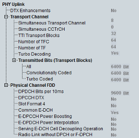

Physical Uplink UE Capabilities
The UE capability information in the PHY uplink section describes the capacity of the UE to process and store uplink channels.

PHY UL UE capabilities
- "DTX Enhancements":
Support of DTX enhancements - "Simultaneous Transport Channel":
Maximum number of uplink transport channels that the UE is capable to process simultaneously, without checking the rate of each transport channel - "Simultaneous CCTrCH":
Maximum number of uplink coded composite transport channels (CCTrCH) that the UE is capable to process simultaneously - "TTI Transport Blocks":
Maximum total number of transport blocks transmitted within transmission time intervals (TTIs) that start at the same time - "Number of TFC":
Maximum number of transport format combinations (TFC) in an uplink transport format combination set that the UE can store - "Number of TF":
Maximum number of uplink transport formats (TF) that the UE can store, where all transport formats for all uplink transport channels are counted - "Turbo Decoding":
Support of turbo decoding - "Transmitted Bits (Transport Blocks)":
Maximum number of bits of all transport blocks being transmitted at an arbitrary time instant. This section comprises three values, corresponding to bits that are convolutionally coded, bits that are turbo-coded and the sum of all bits. - "DPDCH Bits per 10 ms":
Maximum number of DPDCH bits the UE can transmit in 10 ms. The value applies to UE operation in non-compressed mode (if the value is <9600) or in both compressed and non-compressed mode (if the value is ≥9600). - "DPCCH DTX":
Support of discontinuous uplink DPCCH transmission - "Slot Format 4":
Support of DPCCH slot format 4 - "Common E-DCH":
Support of common E-DCH - "E-DPCCH Power Boosting":
Support of E-DPCCH power boosting - "E-DPCCH Power Interpolation":
Support of E-DPCCH power interpolation / extrapolation - "Serving E-DCH Cell Decoupling Operation":
Support of a configuration in which the serving HS-DSCH and serving E-DCH cell are different - "Radio Link without DPCH or F-DPCH":
Support of not to receive both DPCH and F-DPCH downlink channels from the indicated nonserving E-DCH cells